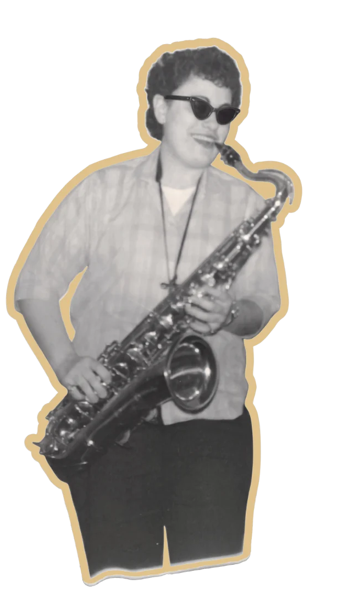

Main hall
Thanksgiving Jazz
In Carnegie Hall’s records since 1957
Semantic Lab at Pratt
1925–2016 · clarinet, tenor and baritone saxophone
How do you tell the story of someone whose work has left few or no traces? Like so many of the women in jazz, Zena Latto’s story is representative of musicians whose presence and influence were all but lost to history. Our involvement began when archivists at Carnegie Hall came across a flyer for a 1957 all-female jazz show they’d hosted but had no institutional record of. The Semantic Lab at Pratt began to gather the materials needed to give Zena an online identity. Prior to her death in 2016, Zena Latto herself consented to an interview and passed her jazz archives on to the Semantic Lab at Pratt. These materials were digitized and made publicly available via the Internet Archive. A Wikipedia page was created by members of the Semantic Lab, who have continued to work on the Zena Latto Project. Her record serves as an illustration of the possibilities in historical recovery and a hub for other marginalized women in jazz.

2014–2016
In November 2014 an intern at a Jacksonville nursing home phoned the Carnegie Hall archives. A resident said she had played a jazz concert there on November 29, 1957, and wanted a copy of the flyer as a keepsake.
Gino Francesconi, the archives director, knew the date at once. It is the night of Thanksgiving Jazz, one of the most famous concerts in the hall’s history. The resident’s name was in none of his records.
The intern was holding the flyer. It was brittle, in pieces and held together with tape, but the top line was legible: Carnegie Recital Hall.
Not only was her copy of the flyer the only one I had ever seen, we didn’t even know the concert took place!
Friday, November 29, 1957 · 8:30 PM
While one of the best-documented jazz concerts in Carnegie Hall’s history played the main stage, nine women played jazz next door.
Main hall
In Carnegie Hall’s records since 1957
Dizzy Gillespie crossed over. He walked next door to see Melba Liston, his trombonist, and by Zena’s account held up the first main-hall show by more than 20 minutes.
Recital hall
No record until 2014
Two instruments are torn away, and Zena’s name is misspelled.
Linked Jazz
Across one interview Zena connected herself to 28 people, from Benny Goodman to the bass player whose name she had to look up afterwards. Each tie below comes from the interview, her written corrections, or the flyer.
Scroll sideways to see the whole chart. Select a name to read what she said. Thin grey lines join people she linked to each other.
1925–2016
From the Bronx to New Orleans to Jacksonville, with a clarinet from 1940, a tenor from 1946 and a baritone for her years on the road with the Sweethearts.
Scroll sideways to see the whole chart. Hover or focus a bar or point for the detail and its source.
From the transcript
Zena’s friends and bandmates were black and white at a time when that drew the police. She describes three episodes, one in New York and two on tour with the Sweethearts, a racially integrated band.
Every quotation is verbatim from the 2015 transcript. Brackets inside a quotation are Zena’s own later additions. Page numbers refer to the transcript PDF.